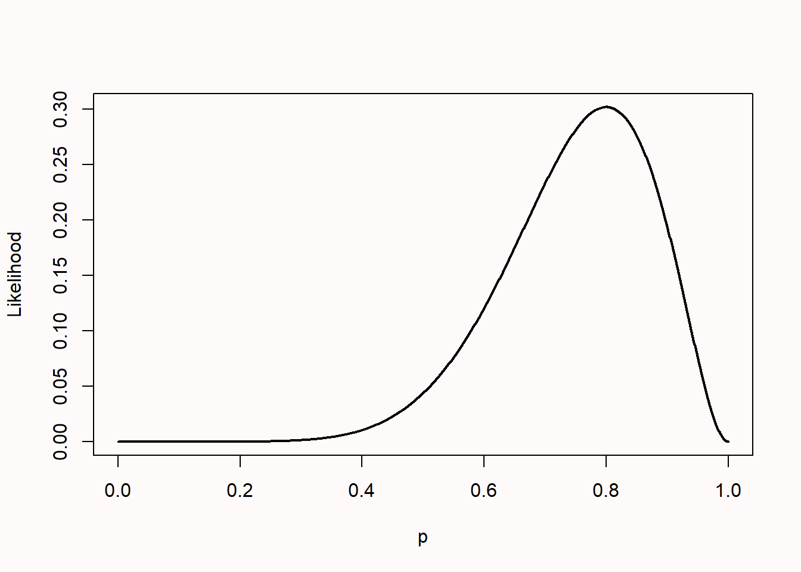
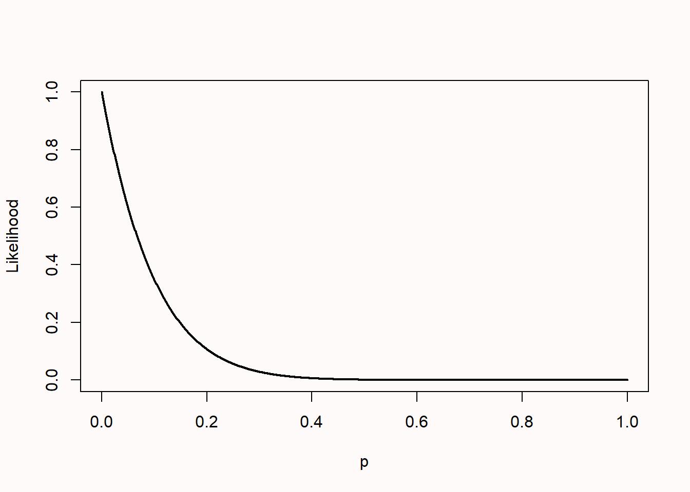
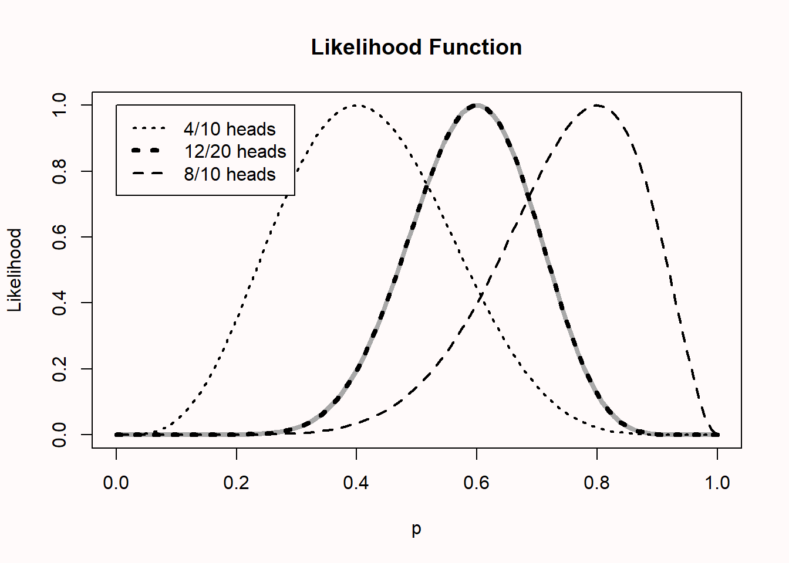
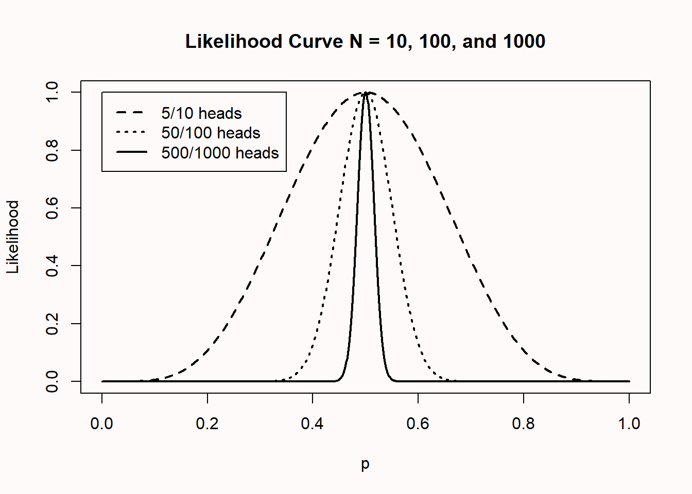
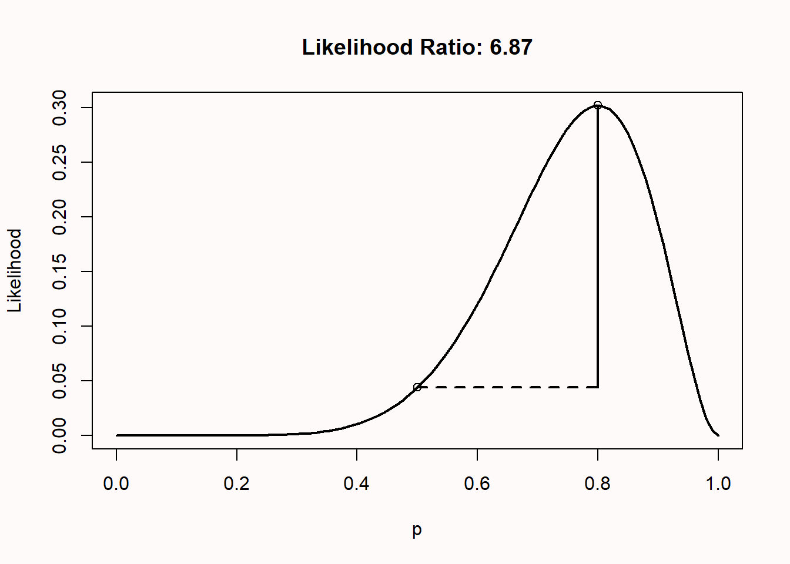
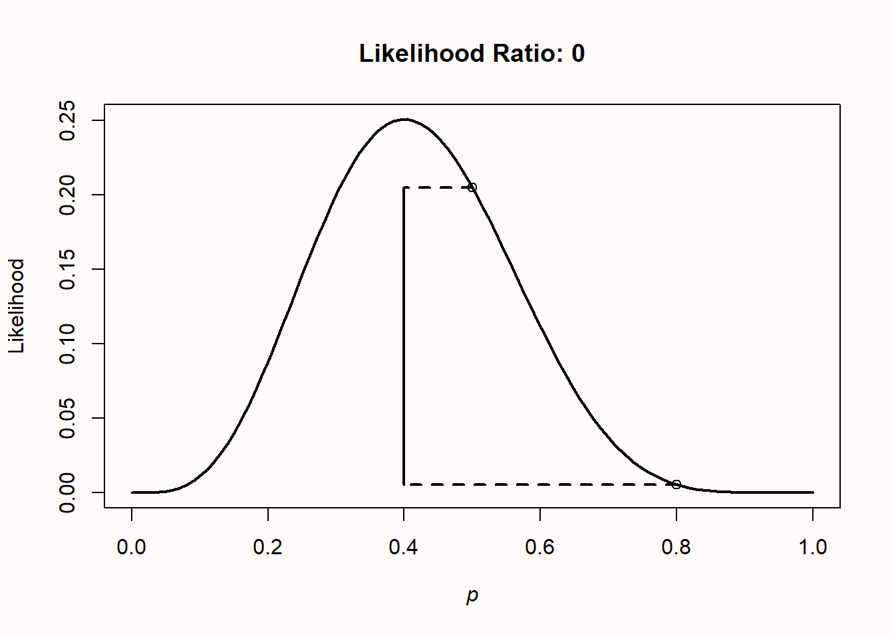
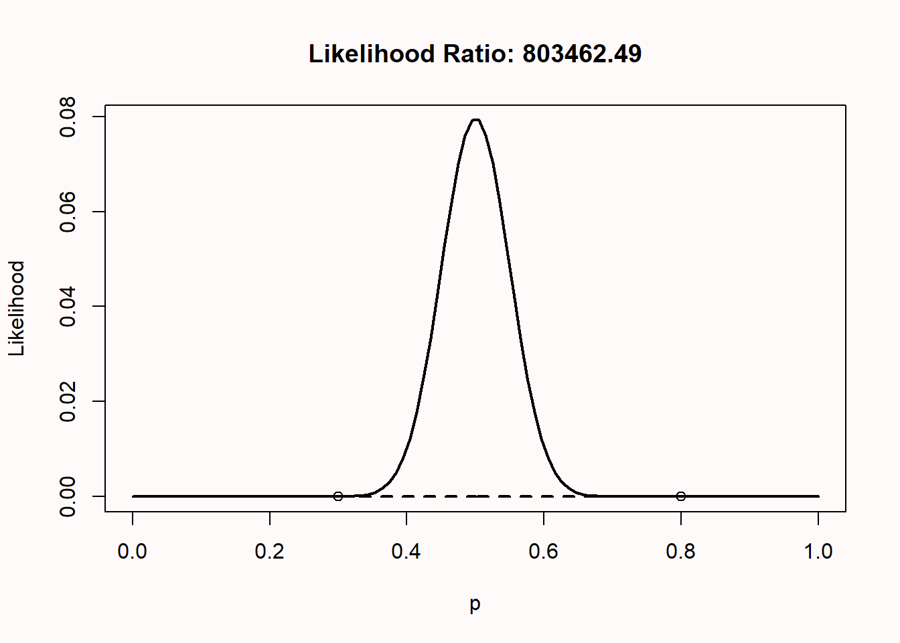
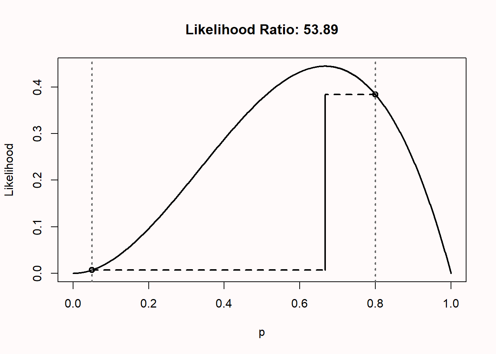
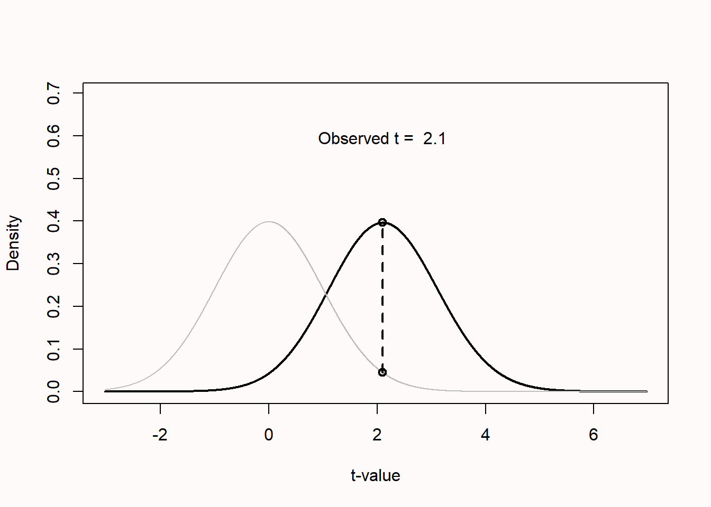

3 Likelihoods
In addition to frequentist and Bayesian approaches to statistical inferences, likelihoods provide a third approach to statistical inferences (Dienes, 2008; Pawitan, 2001). Like Bayesian approaches, which will be discussed in the next chapter, likelihoodists are interested in quantifying a measure of relative evidence when comparing two models or hypotheses. Unlike Bayesians, likelihoodists are not too enthusiastic about the idea of incorporating prior information into their statistical inferences. As the likelihoodists Taper and Lele (2011) write:
It is not that we believe that Bayes’ rule or Bayesian mathematics is flawed, but that from the axiomatic foundational definition of probability Bayesianism is doomed to answer questions irrelevant to science. We do not care what you believe, we barely care what we believe, what we are interested in is what you can show.
Likelihoodists are interested in a measure of relative evidence,. Unlike the Fisherian frequentist approach, where only \(H_0\) is specified, and lower p-values that are less compatible with the null model are interpreted as evidence against the null, likelihoodists specify a null and an alternative model, and quantify the relative likelihood of the data under both models. The Neyman-Pearson approach, in which \(H_0\) and \(H_1\) are specified, aims at decisions about how to act, and does not aim to quantify evidence. At the same time, likelihood functions are an important part of both frequentist and Bayesian approaches. In the Neyman-Pearson approach, likelihoods play an important role through the Neyman-Pearson lemma, which shows that the likelihood ratio test is the most powerful test of \(H_0\) against \(H_1\), and is useful in determining the critical value that is used to reject a hypothesis. In Bayesian approaches, the likelihood is combined with a prior to compute a posterior probability distribution.
We can use likelihood functions to make inferences about unknown quantities. Let’s imagine you flip a coin 10 times, and it turns up heads 8 times. What is the true probability (which is sometimes indicated by the Greek letter \(\theta\) (theta), but we will use p in this chapter) of this coin landing on heads?
The binomial probability of observing k successes in n studies is:
\[ Pr\left( k;n, p \right) = \frac{n!}{k!\left( n - k \right)!}p^{k}{(1 - p)}^{n - k} \]
where p is the probability of a success, k is the observed number of successes, and n is the number of trials. The first term indicates the number of possible combinations of results (e.g., you could start out with eight successes, end with eight successes, or any of the other possible combinations), which is multiplied by the probability of observing one success in each of the trials, which is then multiplied by the probability of observing no success in the remaining trials.
Let’s assume you expect this is a fair coin. What is the binomial probability of observing 8 heads out of 10 coin flips, when p = 0.5? The answer is:
\[ Pr\left(8;10, 0.5 \right) = \frac{10!}{8!\left( 10 - 8 \right)!}*0.5^{8}*{(1 - 0.5)}^{10 - 8} \] In R this probability is computed as as:
or by using the function:
Let’s assume we don’t have any other information about this coin. (You might believe most coins are fair; such priors will be discussed when we talk about Bayesian statistics in the next chapter). The equation Pr(k;n,p) gives the probability of observing k successes from n trials when a coin’s probability of success is p.
When computing a probability, we assume the model to be known, and compute the probability of observing a specific outcome. But based on the data we have observed, we can ask the reversed question: which value of p will make the observed data most likely? When computing a likelihood, we assume the data to be known, and make an inference about the most likely parameter for the model. To answer this question, we can plug in the values for k and n and find which value of p maximizes this function. Ronald Fisher called this maximum likelihood estimation (this is considered one of the most important developments in 20th century statistics, and Fisher published his first paper on this in 1912 as a third year undergraduate when he was 22 (Aldrich, 1997)). Since p can be any value between 0 and 1, we can plot all values in what is known as the likelihood function, so we can see the maximum more easily.
The likelihood is plotted for all possible values of p (from 0 to 1). It should not be surprising that given the data we have observed, the most likely value for the true parameter is 8 out of 10, or p = 0.8, with a likelihood of 0.30 (the highest point on the y-axis). In this example, p = 0.8 is called the maximum likelihood estimator. It is important to know that the likelihood itself has no meaning in isolation. In this sense, it differs from a probability. But we can compare likelihoods of the same function across different values of p. You can read off any other value for any other p, and see that given the observed data, low values of p (e.g., 0.2) are not very likely.
There is a subtle difference between a probability and a likelihood. In colloquial language, you can use both terms to mean the same thing, but in statistics both terms used for different sides of the same coin. Note how the equation for Pr involves both information about the data (k, n) and information about the parameter (p). To compute a probability, we view p as fixed (for instance, for a fair coin, we plug in p = 0.5) and then estimate the probability of different outcomes (k, n). The resulting function is the probability mass function. To compute the likelihood, we instead view the observed data as fixed (e.g., observing 5 heads out of 10 coin tosses), and we view Pr as a function of p, estimating the value that maximizes the likelihood of a particular sample.
Likelihoods are an example of statistical inference: We have observed some data, and we use this data to draw an inference about different population parameters. More formally, the likelihood function is the (joint) density function evaluated at the observed data. Likelihood functions can be calculated for many different models (binomial distributions, normal distributions, see Millar (2011)). This approach is called likelihoodist statistics, or likelihoodism, and it is distinct from frequentist and Bayesian approaches to statistics, as it directly uses the likelihood function to make inferences.
When a mix of heads and tails has been observed, the likelihood curve rises and falls, as it is not possible that the coin can only come up heads or tails (after all, both have already been observed). If only heads or 0 heads are observed, the likelihood curve peaks at the far left or right of the x-axis. When we plot the likelihood curves for 0 heads in 10 coin flips, the likelihood curve looks like Figure 3.2.

Likelihoods can easily be combined. Imagine we have two people flipping the same coin independently. One person observes 8 heads out of 10 flips, and the other observes 4 heads out of 10 flips. You might believe that this should give the same likelihood curve as one person flipping a coin 20 times, and observing 12 heads, and indeed, it does. In the plot below, all likelihood curves are standardized by dividing the curve by the maximum of each likelihood curve. This is why all curves now have a maximum of 1, and we can more easily compare different likelihood curves.

The curve on left is for 4 out of 10 heads, the one on the right is for 8 out of 10 heads. The black dotted curve in the middle is for 12 out of 20 heads. The grey curve, directly beneath the 12 out of 20 heads curve, is calculated by multiplying the likelihood curves: \(L(p_{combined}) = L(p = 0.8) / L(p = 0.4)\).
In Figure 3.4 we see likelihood curves for 10, 100, and 1000 coin flips, which yield 5, 50, and 500 heads, respectively. The likelihood curves are again standardized to make them more easily comparable. As the sample size increases, the curves become more narrow (the dashed line is for n = 10, the dotted line is for n = 100, and the solid line is for n = 1000). This means that as the sample size increases, our data become increasingly less likely under population parameters further removed from the observed number of heads. In other words, we have collected increasingly strong evidence for p = 0.5, compared to most other possible population parameters.

3.1 Likelihood ratios
We can use the likelihood function to compare possible values of p. For example, we might believe the coin we flipped was fair, even though we flipped eight out of ten heads. A fair coin will have p = 0.5, while we observed p = 0.8. The likelihood function allows us to compute the relative likelihood for different possible parameters. How much more likely is our observed data under the hypothesis that this is an unfair coin that will on average turn up heads 80% of the time, compared to the alternative theory that this is a fair coin which should turn up heads 50% of the time?
We can calculate the likelihood ratio:
\[ \frac{L(p = 0.8)}{L(p = 0.5)} \]
Which is 0.302/0.044 = 6.87. In the plot, both circles show the points on the likelihood curve for L(p = 0.5) and L(p = 0.8).

We can subjectively interpret this likelihood ratio, which tells us that our observed data is 6.87 times more likely under the hypothesis that this coin is unfair and will turn up heads 80% of the time, than under the hypothesis that this is a fair coin. How convincing is this? Let’s round the likelihood ratio to 7, and imagine two bags of marbles. One bag contains 7 blue marbles. The second contains 7 marbles, each one a different color of the rainbow, so violet, indigo, blue, green, yellow, orange, and red. Someone randomly picks one of the two bags, draws a marble, and shows it to you. The marble is blue: How certain are you this marble came from the bag with all blue marbles, compared to the bag with rainbow coloured marbles? This is how strongly the likelihood ratio tells us to believe our data were generated by an unfair coin that turns up heads 80% of the time, relative to a fair coin, given that we have observed 8 heads in 10 tosses. After this explanation, intended to not make you rely too much on benchmarks, it might still be useful to know that Royall (1997) considered likelihood ratios of 8 as moderately strong evidence, and likelihood ratios of 32 as strong evidence.
Note that likelihood ratios give us the relative evidence for one specified hypothesis, over another specified hypothesis. The likelihood ratio can be calculated for any two hypothesized values. For example, in Figure 3.6 below, the likelihood ratio is calculated that compares the hypothesis for a fair coin (p = 0.5) with the alternative hypothesis that the coin comes up heads 80% of the time (p = 0.8), when we have observed 4 heads out of 10 coin flips. We see that the observed data are 0.2050/0.0055=37.25 times more likely (ignoring rounding differences – and try to calculate these numbers by hand using the formula provided earlier) under the hypothesis that this is a fair coin than under the hypothesis that this is a coin that turns up heads 80% of the time.
(ref:like6lab) Computing a likelihood ratio for p = 0.5 relative to p = 0.8 when observing p = 0.4.

A likelihood ratio of 1 means the data are equally likely under both hypotheses. Values further away from 1 indicate that the data are more likely under one hypothesis than the other. The ratio can be expressed in favor of one hypothesis over the other (for example L(p = 0.5)/L(p = 0.8) or vice versa (L(p = 0.8)/L(p = 0.5). This means the likelihood ratio of 37.25 for \(H_0\) relative to \(H_1\) is equivalent to a likelihood ratio of 1/37.25 = 0.02685 for \(H_1\) relative to \(H_0\). Likelihood ratios range from 0 to infinity, and the closer to zero or infinity, the stronger the relative evidence for one hypothesis over the other. We will see in the chapter on Bayesian statistics that likelihood ratios are in this sense very similar (and a special case of) a Bayes Factor.
Likelihoods are relative evidence. Just because the data are more likely under one possible value of p than another value of p doesn’t mean that the data have come from either of these two distributions. Other values might generate even higher likelihood values. For example, consider the situation where we flip a coin 100 times, and observe 50 heads. We compare p = 0.3 versus p = 0.8, and find that the likelihood ratio is 803462, implying that there is 803461 times more evidence in the data for p = 0.3 than for p = 0.8. That might sound pretty conclusive evidence for p = 0.3. But it is only relative evidence for p = 0.3 compared to p = 0.8. If we look at the likelihood function, we clearly see that, not surprisingly, p = 0.5 is the value that maximizes the likelihood function. Just because one hypothesis is more likely than another hypothesis, does not mean that there isn’t a third hypothesis that is even more likely.

3.2 Likelihood of mixed results in sets of studies
Science is a cumulative process, and we should evaluate lines of research, not single studies. One big problem in the scientific literature is that nonsignificant results are often never published (Fanelli, 2010; Franco et al., 2014). At the same time, because the statistical power of hypothesis tests are never 100% (and often much lower), it is a mathematical reality that it is unlikely (or “too good to be true”) that a set of multiple studies yields exclusively significant results. (Francis, 2014; Schimmack, 2012). We can use binomial likelihoods to examine how likely it is to observe mixed results, and understand when mixed results are nevertheless strong evidence for the presence of an effect. The following is largely based on Lakens & Etz (2017).
The probability of observing a significant or nonsignificant result in a study depends on the Type 1 error rate (\(\alpha\)), the statistical power of the test (1-\(\beta\)), and the probability that the null hypothesis is true (Wacholder et al., 2004). There are four possible outcomes of a study: a true positive, a false positive, a true negative, and a false negative. When \(H_0\) is true, the probability of observing a false positive depends on the \(\alpha\) level or the Type 1 error rate (e.g., 5%). When \(H_1\) is true, the probability of observing a true positive depends on the statistical power of the performed test (where an often recommended minimum is 80%), which in turn depends on the \(\alpha\) level, the true effect size, and the sample size. With an \(\alpha\) level of 5%, and when \(H_0\) is true, a false positive will occur with a 5% probability (as long as error rates are controlled, e.g., in preregistered studies) and true negative will occur with a 95% probability. When a test has 80% power, and \(H_1\) is true, a true positive has a probability of 80%, and a false negative has a probability of 20%.
If we perform multiple studies, we can calculate the binomial probability that we will observe a specific number of significant and non-significant findings (Ioannidis & Trikalinos, 2007). We can calculate the probability of finding exactly two significant results out of three studies assuming the null hypothesis is true. When \(H_0\) is true, the probability of significant results equals the \(\alpha\) level, and thus when the \(\alpha\) level is carefully controlled (e.g., in preregistered studies) the probability of observing a significant result (p) = 0.05. That is, when k = 2, n = 3, and p = .05, the binomial probability function tells us that the probability of finding exactly two significant results in three studies is 0.007 (0.05 × 0.05 × 0.95 = 0.002375, and there are three orders in which two of the three results can be observed, so 0.002375 × 3 = 0.007).
To calculate the likelihood assuming \(H_1\) is true, we need to make an assumption about the power in each study. Let’s provisionally assume all studies were powered at 80% and thus p = .80. The probability of observing exactly two significant results in three studies, assuming a power of 0.8, is 0.384 (0.8 × 0.8 × 0.2 = 0.128, and with three orders in which two of the three results can be significant, 0.128 × 3 = 0.384). In other words, if you set out to perform 3 studies, your hypothesis is correct, and you test your hypothesis with 80% power, there is a 38.4% probability of observing 2 out of 3 significant results, and a 9.6% probability to observe 1 out of 3 significant results (and for an extremely unlucky individual, a 0.8% probability of not finding any significant results in three studies, even though there is a true effect). Unless power is extremely high, mixed results should be expected in sets of studies.
Both likelihoods at p = .05 and p = .80 are highlighted in Figure 3.8 by the circles on the dotted vertical lines.We can use the likelihood of the data assuming \(H_0\) or \(H_1\) is true to calculate the likelihood ratio, 0.384/0.007 = 53.89, which tells us the observed outcome of exactly two significant results out of three studies is 53.89 times more likely when \(H_1\) is true and studies had 80% power, than when \(H_0\) is true and studies have a carefully controlled 5% Type 1 error rate. Likelihood ratios of 8 and 32 have been proposed as benchmarks of moderately strong and strong evidence, respectively (Royall, 1997), which implies that finding two significant results out of the three studies could be considered strong evidence for \(H_1\), assuming 80% power. A Shiny app to perform these calculations is available here.

In sets of studies, the likelihood ratio in favor of \(H_1\) versus \(H_0\) after observing a mix of significant and nonsignificant findings can become surprisingly large. Even though the evidence appears to be mixed, there is actually strong evidence in favor of a true effect. For example, when a researcher performs six studies with 80% power and a 5% alpha level and finds three significant outcomes and three nonsignificant outcomes, the cumulative likelihood ratio is convincingly large at 38-to-1 in favor of \(H_1\) to consider the set of studies strong evidence for a true effect. Intuitively, researchers might not feel convinced by a set of studies where three out of six results were statistically significant. But if we do the math, we see that such a set of studies can be very strong evidence in favor of a true effect. A better understanding of these probabilities might be an important step in mitigating the negative effects of publication bias.
Hopefully, researchers become more inclined to submit nonsignificant findings for publication when they have a better understanding of the evidential value in lines of research with mixed results. Publishing all performed studies in lines of research will reduce publication bias, and increase the informational value of the data in the scientific literature. Expecting all studies in lines of research to be statistically significant is not reasonable, and it is important that researchers develop more realistic expectations if they are to draw meaningful inferences from lines of research. We don’t have a very good feeling for what real patterns of studies look like, because we are continuously exposed to a scientific literature that does not reflect reality. Almost all multiple study papers in the scientific literature present only statistically significant results, even though this is unlikely given the power of these studies, and the probability that we would only study correct predictions (Scheel et al., 2021). Educating researchers about binomial probabilities and likelihood ratios is a straightforward way to develop more realistic expectations about what research lines that contain evidential value in favor of \(H_1\) actually look like.
3.3 Likelihoods for t-tests
So far we have computed likelihoods for binomial probabilities, but likelihoods can be computed for any statistical model (Glover & Dixon, 2004; Pawitan, 2001). For example, we can compute the relative likelihood of observing a t-value under the null and an alternative hypothesis as illustrated in Figure 3.9. Of course, the observed data is most likely if we assume the observed effect equals the true effect, but examining the likelihood reveals that there are many alternative hypotheses that are relatively more likely than the null hypothesis. This also holds when observing non-significant results, which can be more likely under an alternative hypothesis of interest, than under the null hypothesis. This is a reason why it is incorrect to say that there is no effect when p > \(\alpha\) (see p-value misconception 1).

3.4 Test Yourself
3.4.1 Questions about likelihoods
Q1: Let’s assume you expect this is a fair coin. What is the binomial probability of observing 8 heads out of 10 coin flips, when p = 0.5? (You can use the functions in the chapter, or compute it by hand).
Q2: The likelihood curve rises up and falls down, except at the extremes, when 0 heads or only heads are observed. Copy the code below (remember that you can click the ‘clipboard’ icon on the top right of the code section to copy all the code to your clipboard), and plot the likelihood curves for 0 heads (x <- 0) out of 10 flips (n <- 10) by running the script. What does the likelihood curve look like?
n <- 10 # set total trials
x <- 5 # set successes
H0 <- 0.5 # specify one hypothesis you want to compare
H1 <- 0.4 # specify another hypothesis you want to compare
dbinom(x, n, H0) / dbinom(x, n, H1) # Returns the H0/H1 likelihood ratio
dbinom(x, n, H1) / dbinom(x, n, H0) # Returns the H1/H0 likelihood ratio
theta <- seq(0, 1, len = 100) # create probability variable from 0 to 1
like <- dbinom(x, n, theta)
plot(theta, like, type = "l", xlab = "p", ylab = "Likelihood", lwd = 2)
points(H0, dbinom(x, n, H0))
points(H1, dbinom(x, n, H1))
segments(H0, dbinom(x, n, H0), x / n, dbinom(x, n, H0), lty = 2, lwd = 2)
segments(H1, dbinom(x, n, H1), x / n, dbinom(x, n, H1), lty = 2, lwd = 2)
segments(x / n, dbinom(x, n, H0), x / n, dbinom(x, n, H1), lwd = 2)
title(paste("Likelihood Ratio H0/H1:", round(dbinom(x, n, H0) / dbinom(x, n, H1), digits = 2), " Likelihood Ratio H1/H0:", round(dbinom(x, n, H1) / dbinom(x, n, H0), digits = 2)))Q3: Get a coin out of your wallet. Flip it 13 times, and count the number of heads. Using the code above, calculate the likelihood of your observed results under the hypothesis that your coin is fair, compared to the hypothesis that the coin is not fair. Set the number of successes (x) to the number of heads you observed. Change \(H_1\) to the number of heads you have observed (or leave it to 0 if you didn’t observe any heads at all!). You can just use 4/13, or enter 0.3038. Leave \(H_0\) at 0.5. Run the script to calculate the likelihood ratio. What is the likelihood ratio of a fair compared to a non-fair coin (or \(H_0\)/\(H_1\)) that flips heads as often as you have observed, based on the observed data? Round your answer to 2 digits after the decimal.
Q4: Earlier we mentioned that with increasing sample sizes, we had collected stronger relative evidence. Let’s say we would want to compare L(p = 0.4) with L(p = 0.5). What is the likelihood ratio if \(H_1\) is 0.4, \(H_0\) is 0.5, and you flip 5 heads in 10 trials? From the two possible ways to calculate the likelihood ratio (\(H_1\)/\(H_0\) and \(H_0\)/\(H_1\)), report the likelihood that is ≥ 1, and round to 2 digits after the decimal point.
Q5: What is the likelihood ratio if \(H_1\) is 0.4, \(H_0\) is 0.5, and you flip 50 heads in 100 trials? From the two possible ways to calculate the likelihood ratio (\(H_1\)/\(H_0\) and \(H_0\)/\(H_1\)), report the likelihood that is ≥ 1, and round to 2 digits after the decimal point.
Q6: What is the likelihood ratio if \(H_1\) is 0.4, \(H_0\) is 0.5, and you flip 500 heads in 1000 trials? From the two possible ways to calculate the likelihood ratio (\(H_1\)/\(H_0\) and \(H_0\)/\(H_1\)), report the likelihood that is ≥ 1, and round to 2 digits after the decimal point.
Q7: When comparing two hypotheses (p = X vs p = Y), a likelihood ratio of:
3.4.2 Questions about mixed results
A Shiny app to perform the calculations is available here.
Q8: Which statement is correct when you perform 3 studies?
Q9: Sometimes in lines of three studies, you’ll find a significant effect in one study, but there is no effect in the other two related studies. Assume the two related studies were not exactly the same in every way (e.g., you have changed the manipulation, or the procedure, or some of the questions). It could be that the two other studies did not work because of minor differences that had some effect you do not fully understand yet. Or it could be that the single significant result was a Type 1 error, and \(H_0\) was true in all three studies. Which statement below is correct, assuming a 5% Type 1 error rate and 80% power?
The idea that most studies have 80% power is slightly optimistic. Examine the correct answer to the previous question across a range of power values (e.g., 50% power, and 30% power).
Q10: Several papers suggest it is a reasonable assumption that the power in the psychological literature might be around 50%. Set the number of studies to 4, the number of successes also to 4, and the assumed power slider to 50%, and look at the table at the bottom of the app. How likely is it to observe 4 significant results in 4 studies, assuming there is a true effect?
Imagine you perform 4 studies, and 3 show a significant result. Change these numbers in the online app. Leave the power at 50%. The output in the text tells you:
When the observed results are equally likely under \(H_0\) and \(H_1\), the likelihood ratio is 1. Benchmarks to interpret Likelihood Ratios suggest that when 1<LR<8 there is weak evidence, when 8<LR<32 there is moderate evidence, and when LR>32, there is strong evidence.
The data are more likely under the alternative hypothesis than the null hypothesis with a likelihood ratio of 526.32
These calculations show that, assuming you have observed three significant results out of four studies, and assuming each study had 50% power, it is 526 times more likely to have observed these data when the alternative hypothesis is true, than when the null hypothesis is true. In other words, it is 526 times more likely to find a significant effect in three studies when you have 50% power, than to find three Type 1 errors in a set of four studies.
Q11: Maybe you don’t think 50% power is a reasonable assumption. How low can the power be (rounded to 2 digits), for the likelihood to remain higher than 32 in favor of \(H_1\) when observing 3 out of 4 significant results?
The main take home message of these calculations is to understand that 1) mixed results are supposed to happen, and 2) mixed results can contain strong evidence for a true effect, across a wide range of plausible power values. The app also tells you how much evidence, in a rough dichotomous way, you can expect. This is useful for our educational goal. But when you want to evaluate results from multiple studies, the formal way to do so is by performing a meta-analysis.
The above calculations make a very important assumption: The Type 1 error rate is controlled at 5%. If you try out many different tests in each study, and only report the result that yielded a p < 0.05, these calculations no longer hold.
Q12: Go back to the default settings of 2 out of 3 significant results, but now set the Type 1 error rate to 20%, to reflect a modest amount of p-hacking. Under these circumstances, what is the highest likelihood in favor of \(H_1\) you can get if you explore all possible values for the true power?
As the scenario above shows, p-hacking makes studies extremely uninformative. If you inflate the error rate, you quickly destroy the evidence in the data. You can no longer determine whether the data is more likely when there is no effect, than when there is an effect. Sometimes researchers complain that people who worry about p-hacking and try to promote better Type 1 error control are missing the point, and that other things (better measurement, better theory, etc.) are more important. I fully agree that these aspects of scientific research are at least as important as better error control. But better measures and theories will require decades of work. Better error control can be accomplished today, if researchers would stop inflating their error rates by flexibly analyzing their data. And as this assignment shows, inflated rates of false positives very quickly make it difficult to learn what is true from the data we collect. Because of the relative ease with which this part of scientific research can be improved, and because we can achieve this today (and not in a decade) I think it is worth stressing the importance of error control, and publish more realistic looking sets of studies.
Q13: Some ‘prestigious’ journals (which, when examined in terms of scientific quality such as reproducibility, reporting standards, and policies concerning data and material sharing, are quite low quality despite their prestige) only publish manuscripts with a large number of studies, which should all be statistically significant. If we assume an average power in psychology of 50%, only 3.125% of 5 study articles should contain exclusively significant results. If you pick up a random issue from such a prestigious journal, and see 10 articles, each reporting 5 studies, and all manuscripts have exclusively significant results, would you trust the reported findings more, or less, than when all these articles had reported mixed results? Why?
Q14: Unless you will power all your studies at 99.99% for the rest of your career (which would be slightly inefficient, but great if you don’t like insecurity), you will observe mixed results in lines of research. How do you plan to deal with mixed results in lines of research?
3.4.3 Open Questions
What is the difference between a probability and a likelihood?
Why is it important to remember that a likelihood ratio is relative evidence?
If we compare 2 hypotheses, H0 and H1, and the likelihood ratio of H1 compared to H0 is 77, what does this mean?
What are benchmarks for medium and strong evidence according to Royall?
How can it be that a likelihood ratio is 200, but both hypotheses are incorrect?
If we perform multiple studies and find 2 out of 3 studies show a significant results, how can this actually be strong evidence for H1?